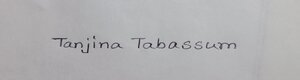

Present Address
SantosTo work in a responsible and challenging position where I can use honestly my creativity, Interpersonal skills and my knowledge of Social Work to contribute to any development sector of Bangladesh.
| Exam | Group | Institution | Result | Passing Year | Board |
|---|---|---|---|---|---|
| SSC | Business Studies | Tangail Girls High School | GPA 4.86 | 2017 | Dhaka |
| HSC | Business Studies | Adamjee Cantonment College | GPA 4.94 | 2019 | Dhaka |
| Graduation Third Year | 2023 | Mawlana Bhashani Science and Technology university | 3.4 CGPA |
Father's Name :MD Bablu Mia Alternatte Contact :01819901601 Mother's Name :Mahmuda Akter Marital Status :Single Date of Birth :Jan03,2002 Residence Phone :NA Home District :Tangail Gender :Female Religion :Islam Blood Group :B+ Nationality :Bangladeshi National ID :6914813313
Permanent Address: Vill:Masterpara, P.O:Madhupur, Thana:Madhupur, District:Tangail
Proficiency in English: Reading:Excellent Writting:Excellent Speaking:Good
Computer Skills:
Microsoft word, Microsoft Excel, Microsoft PowerPoint, Adobe Photoshop, Adobe Illustrator, E-mailing.
My Specialities
Another thing I want to disclose
I am always cool and modest. I am able to control any difficult situation and take any innovative decision without any stress. I have the mental ability to work under pressure. I am willing to work anywhere in Bangladesh.
Declaration:Hereby, I declare that all information furnished in this CV is correct and complete.
signature
(Tanjina Tabassum)